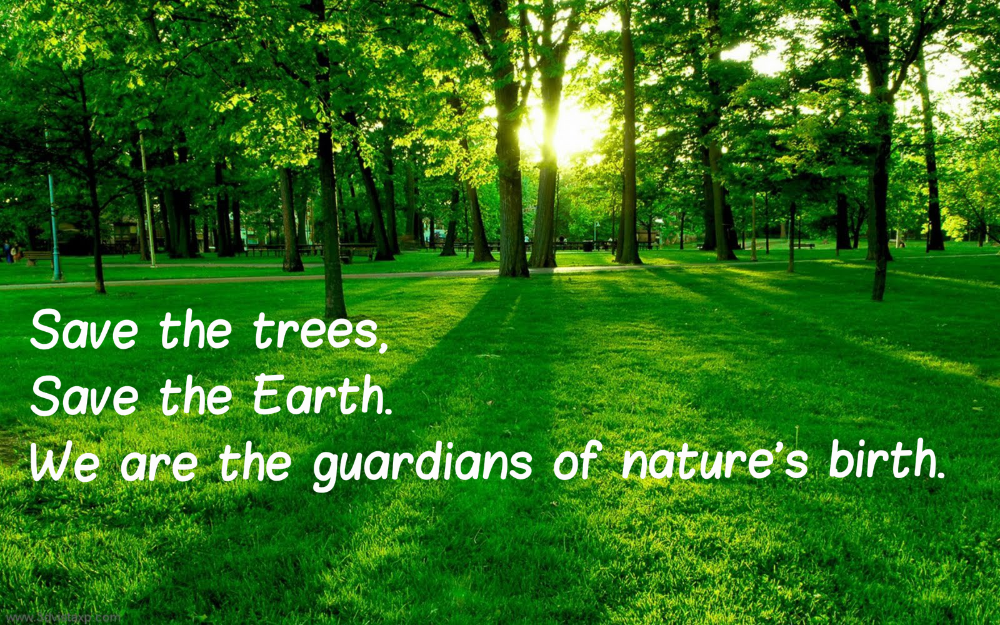

Celebrating the importance of trees, Van Mahotsav was initiated in 1950 to celebrate the importance of growing and saving forests and to create awareness about the bad effects of deforestation, which is a great initiative, it is observed in the first week of July each year. ... Plant more and more trees every day.
Reasons to Save Forest.
1.Forests and trees help us to maintain ecological balance.
----By Zafeera.Sajad
Class 6.A
Tolins World School